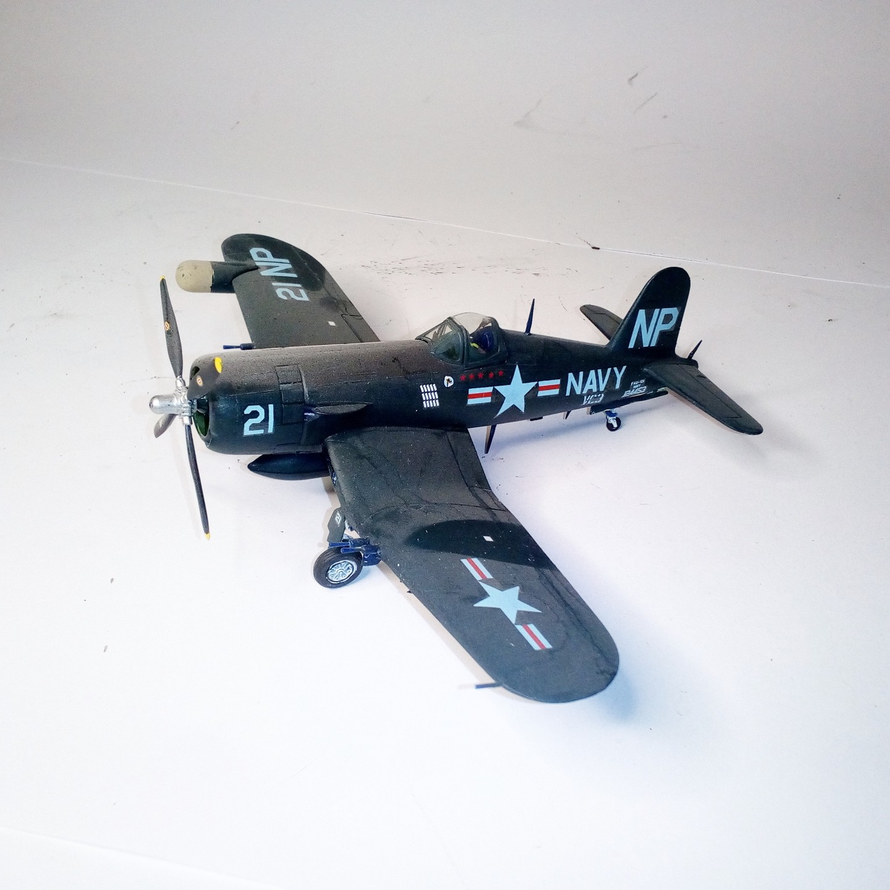

Aerei · scale model archive
Vought F4U-4B Corsair
Vought F4U-4B Corsair — Kit: Italeri, Scale: 1/72. VMA 332 Korea 1953 #1/72 #Italeri

Photo gallery
English description
VMA 332 Korea 1953
#1/72 #Italeri
Descrizione italiana
VMA 332 Korea 1953.